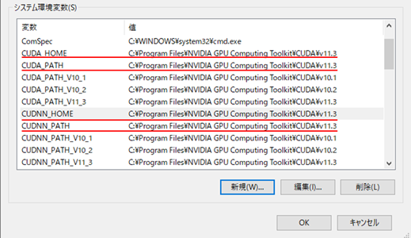

環境構築手順書
1 本書について
本書では、建物テクスチャ視認性向上ツール(以下「本ツール」という。)の環境構築手順について記載しています。
2 動作環境
本ツールの動作環境は以下のとおりです。
| 項目 | 推奨動作環境 |
|---|---|
| OS | Microsoft Windows 10 または 11 |
| CPU | Intel Core i7-11700F以上 |
| Memory | 16GB以上 |
| GPU | NVIDIA Quadro RTX 5000以上 |
| GPU Memory | 16GB以上 |
3 ソフトウェア環境
本ツールの使用言語は、Python（バージョン3.9）です。使用ライブラリを以下に示します。
<ライブラリ一覧>
| ライブラリ名 | バージョン | ライセンス | 使用用途 |
|---|---|---|---|
| tqdm | 4.63.0 | MIT License, Mozilla Public License 2.0 | プログレスバーの表示 |
| numpy | 1.21.5 | BSD License (BSD-3-Clause) | 数値計算 |
| Pillow | 9.0.1 | Historical Permission Notice and Disclaimer | 画像の読み書き |
| PyYAML | 6.0 | MIT License | yamlファイルの読み書き |
| torch | 1.12.1 | BSD License (BSD-3-Clause) | 機械学習 |
| torchvision | 0.13.1 | BSD | 機械学習 |
| lightning | 1.9.5 | Apache Software License (Apache-2.0) | 機械学習 |
| opencv-python | 4.5.4.60 | Apache Software License (Apache-2.0) | 画像の読み書き、画像処理 |
| networkx | 2.6.3 | BSD License | グラフ構造の管理 |
| openmim | 0.3.6 | Apache 2.0 license | OpenMMLabライブラリの管理 |
| mmcv | 2.0.0rc4 | Apache Software License | 機械学習 |
| mmedit | 1.0.0rc5 | Apache Software License (Apache-2.0) | 機械学習 |
| mmengine | 0.10.1 | Apache Software License (Apache-2.0) | 機械学習 |
4 環境構築
4-1 ツール構成
本ツールは、下図に示す通りLOD2建築物モデル自動作成ツールのリポジトリ内に存在します。 また、本ツールは、屋根面視認性向上ツールと壁面視認性向上ツールで構成されています。

<屋根面視認性向上ツール構成>

<壁面視認性向上ツール構成>

4-2 リポジトリのクローン
以下のコマンドでリポジトリをクローンします。
リポジトリの構成はこちらを参照してください。
> git clone https://github.com/Project-PLATEAU/Auto-Create-bldg-lod2-tool.git
4-3 AIモデルパラメータのダウンロード
本ツールに搭載されているAIモデルのパラメータをダウンロードします。
4-3-1 屋根面視認性向上用モデル
屋根面視認性向上用モデル（ファイル名：iter_280000_conv.pth）をダウンロードします。
https://drive.google.com/file/d/1xBFAVgGeIGFsvMN6bG_Y9renLyNm46is/view?usp=drivesdk
ダウンロードしたファイルは下図の位置に保存します。
4-3-2 壁面視認性向上用モデル
壁面視認性向上用モデル（ファイル名：latest_net_G_A.pth）をダウンロードします。
https://drive.google.com/file/d/14tsr1r1s6aI6fm-cX7ZfcGr-56SdiTid/view?usp=drivesdk
ダウンロードしたファイルは下図の位置に保存します。
5 仮想環境の作成
専用環境を作成しツールを実行する場合、仮想環境を構築することを推奨します。
例として以下にvenvを使用した仮想環境の作成手順を示します。
venv は Python の標準ツールであるため、インストールは不要です。なお、コマンドプロンプト上での操作とします。
5-1 作成
以下のコマンドを使用し、仮想環境を作成します。一度実施すれば良いです。
> cd [仮想環境を作成するフォルダパス]
> py -[Pythonのインストールバージョン] -m venv [仮想環境名]
[Pythonのインストールバージョン]：例として「3.9」など
[仮想環境名]：任意の名称
5-2 切り替え
以下のコマンドを使用し、作成した環境へ切り替えを行います。
> cd [仮想環境を作成したフォルダパス]
> [仮想環境名]\Scripts\activate.bat
[仮想環境名]：作成した仮想環境名
5-3 終了
仮想環境を終了する場合には以下のコマンドを使用し、切り替えた環境を終了します。
このまま環境構築を実施する場合には終了する必要はありません。
> deactivate
6 依存ライブラリのインストール
以下コマンドを使用して、仮想環境に依存ライブラリをインストールします。
requirements.txtは、本ツールのソースコードに同梱しています。
> pip install –r requirements.txt
7 GPU環境の構築
GPU環境の構築方法を以下に示します。なお、手順7-1～7-4はPCに対して一度設定すれば良いです。
手順7-5以降に関しては、仮想環境ごとに設定する必要があります。
[GPU環境構築時の注意点]
仮想環境に、torch、 torchvisionライブラリ、拡張モジュールをインストールする作業は、システム環境の構築後に行う必要があります。
7-1 Build Tools for Visual Studioのインストール
以下より、Build Tools for Visual Studio 2017、または、Build Tools for Visual Studio 2019をダウンロードし、インストールします。
なお、Visual Studio 2017 、または、Visual Studio 2019のインストールでも良いです。
https://visualstudio.microsoft.com/ja/downloads/
7-2 cuda toolkit 11.3のインストール
以下より、cuda toolkit 11.3 をダウンロードし、インストールします。
なお、インストールオプションはデフォルト値のままで良いです。
7-3 cuDNNのインストール
以下よりcuDNNをダウンロードします。
https://developer.nvidia.com/rdp/cudnn-download
ダウンロードした「cudnn-windows-x86_64-8.6.0.163_cuda11-archive.zip」を解凍します。
解凍したファイルを「C:\Program Files\NVIDIA GPU Computing Toolkit\CUDA\v11.3」以下の該当フォルダにコピーします。
<cuDNNのインストール>

7-4 システム環境変数の追加
システム環境変数に、以下の4変数を登録します。4変数の値は、共通とします。
| 変数名 | 値 |
|---|---|
| CUDA_HOME, CUDA_PATH, CUDNN_HOME, CUDNN_PATH | C:\Program Files\NVIDIA GPU Computing Toolkit\CUDA\v11.3 |
<GPU環境構築におけるシステム環境変数の登録>

7-5 torch, torchvisionのインストール
仮想環境に、torch, torchvisionをインストールします。
> pip install torch==1.12.1+cu113 torchvision==0.13.1+cu113 --extra-index-url https://download.pytorch.org/whl/cu113
<torch, torchvisionのインストール>
7-6 拡張モジュールのインストール
「src\createmodel\housemodeling\roof_edge_detection_model\thirdparty\heat\models\ops」フォルダをコピーし、任意のフォルダに貼り付けます。(opsフォルダのパスを短くすることが目的です。)
仮想環境にて、拡張モジュールのビルドとインストールを行います。
> cd F:\ops
> python setup.py build
> python setup.py install
<拡張モジュールのインストール >

インストール後、pip listコマンドにて「MultiScaleDeformableAttention」が一覧に表示されていれば、拡張モジュールのインストールが完了している状態です。